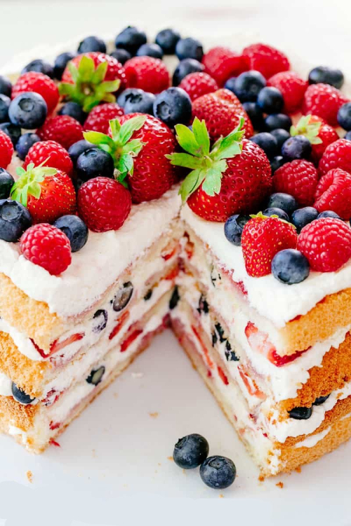
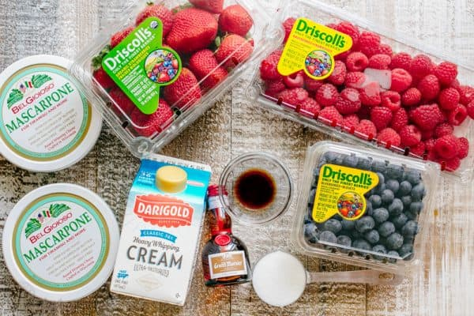
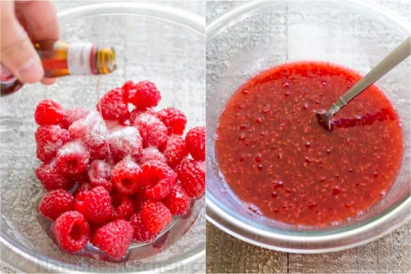
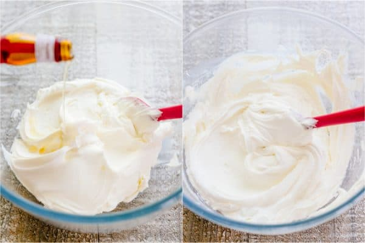
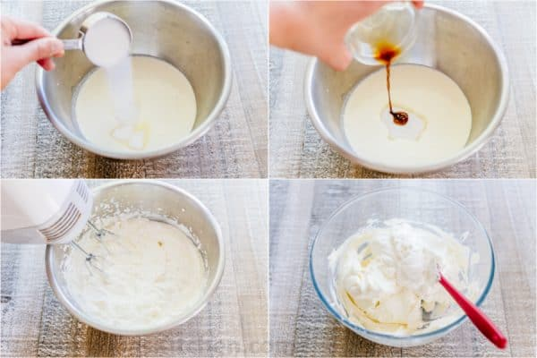
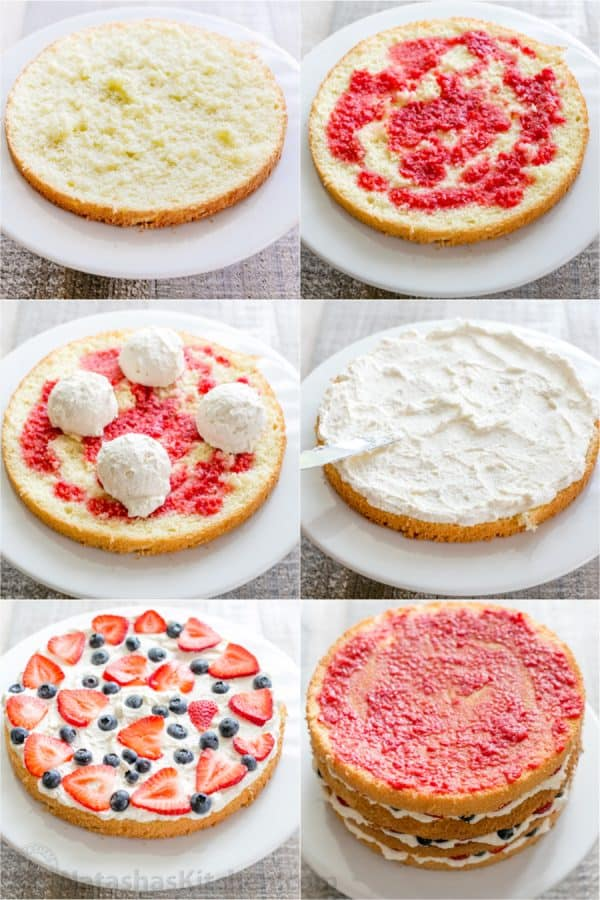

Berry Tiramisu Cake Recipe
January 9, 2020
This is the most stunning berry tiramisu cake recipe you’ll make because it’s an actual cake. This layered tiramisu cake with fruit has simple ingredients and is surprisingly easy to make.

Ingredients for Berry Tiramisu Cake:
The base starts with a super simple, traditional European sponge cake. The mascarpone cheese can be found at most major grocery stores and the liqueur is usually only found in liquor stores. We love Grand Marnier Orange Liqueur for its amazing flavor. If you don’t want to buy a big bottle, you can purchase 2 tiny bottles as pictured (1.5 oz each) to get 6 Tbsp for this recipe. You’ll also need fresh strawberries, raspberries, blueberries, some whipping cream, sugar, and vanilla extract.

How to Make a Tiramisu Cake:
These cupcakes are easy to master and you will be making bakery-quality cupcakes in no time.
- Bake the easy 4-ingredient sponge cake. Once cakes are at room temp, use a serrated knife to cut in half for a total of 4 layers.
- In a small bowl, combine 1/2 package raspberries, 1/4 cup water, 4 Tbsp orange liqueur, and 2 Tbsp sugar. Mash those together with a fork and set aside.

- Just before assembling your cake, make the cream: In a large bowl, use a spatula to fold together 16 oz mascarpone cheese and 2 Tbsp orange liqueur until well incorporated.

- In a second large mixing bowl, beat with a mixer 1 1/2 cups heavy cream, 1/3 cup sugar, and 1 tsp vanilla just until fluffy with soft peaks (note: mascarpone stabilizes whipped cream so don’t over-beat or it will become grainy). Use a spatula to fold half of the whipped cream into the mascarpone to lighten it then fold in remaining cream and blend until fully incorporated. It may seem loose at first but it thickens as it sits.

How to Assemble Berry Tiramisu Cake:
- Place your first cake layer on a serving platter and use a spoon to spread 1/4 of your raspberry syrup (no need for perfection).
- Top with 1/4 of your cream and a generous layer of sliced strawberries and whole blueberries.
- Repeat with remaining layers and cover the top with remaining whole strawberries, raspberries, and blueberries.
Tip: if you spread the cream and place berries just past the cake’s edges, it will look prettier and more loaded when stacked.
